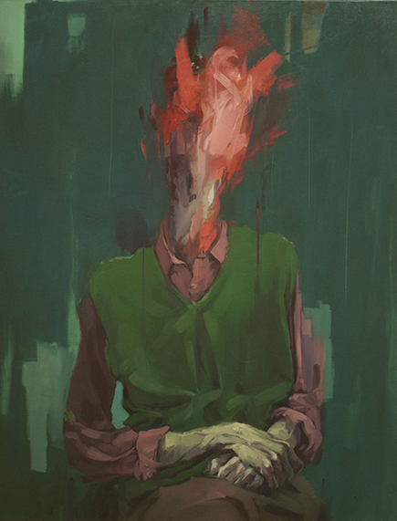
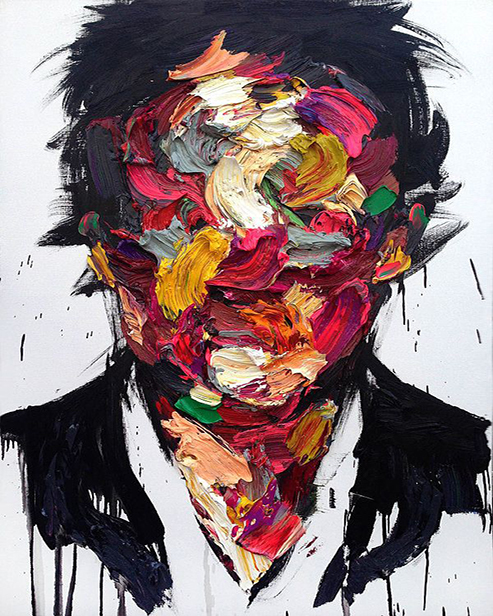
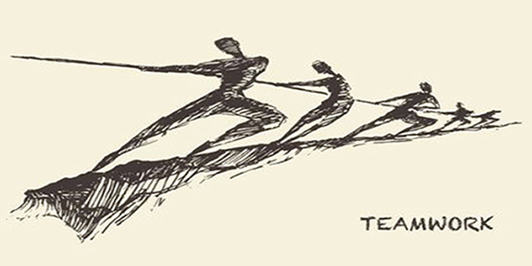

본문콘텐츠영역
COLLECTION
-
You wouldn’t know it from these photos, but the Acne Studios women’s and men’s collections took place together. Meaning, at the same time, in the same venue, with the same music. But instead of being shown together, they had been consciously uncoupled—separated by a featureless white wall running the length of the runway(s).
-
There we were, having completely different Gallery's Studios experiences based on collections that were completely different (Luke’s entertaining, acute review is worth a read). In fact, we learned that this would be the case shortly before when we shared a tête-à-tête with Jonny Johansson, who explained that the tension of simultaneous collections felt more compelling to him than a mixed lineup.
-

“Fashion seems to be in this in-between moment, where it’s referring to history a lot and we’re trying to get to the future,” he said. But if gender fluidity is defining our present, isn’t the wall regressive? “The wall could also be going backwards because we don’t know what’s coming next, but something is coming,” he said.
As if hedging his bets—and throwing off any synchronicity between the design teams—Johansson determined that the men’s direction would be forward while the women’s direction would look back (let’s avoid any temptation to read into this). More specifically, AI and algorithms contributed to the men’s designs, whereas Old Masters artworks and ornate, ornamental fabrics formed the basis of the women’s show. Beautiful jacquards, brocades, and velvets that might have otherwise been used for upholstery, theater curtains, or a mondaine’s corset were transformed into dramatic dress coats, cocoon-shaped tunics, and sumptuous suiting with edges frayed and tasseled to varying degrees of decadent distress. Pooling pants trimmed with similar techniques made for an alluring silhouette, especially as a coordinated look, but were essentially glorified dust brushes and a tripping hazard waiting to happen. A series of twisted tailored looks, including a leather coat painted with a faded scene of classical nudes, reiterated a certain unhinged, arty attitude that comes so naturally to Acne Studios. A body-contoured dress enhanced with a burnout treatment that traced the acanthus pattern was gorgeous in a way that transcended time. The notion of a frame bag took on new meaning with picture-frame pieces affixed as decoration.
SALE
höst vinter 20201/22
New
- Welcome to Gallery.
- Gallery is a creative consultancy building brands by combining Art and Industry.
An entrepreneurial collective of thinkers and makers; designers, writers, strategists, film directors,
photographers, art directors and producers.
UPDATED PICTURE
- 
-

-
-
- 